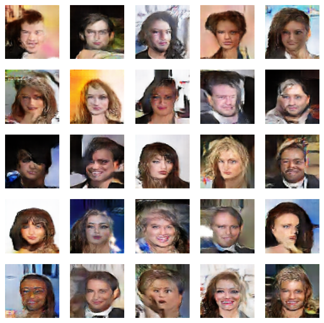

Face Generation using GANs
Project Overview
Developed a Generative Adversarial Network (GAN) model for generating synthetic faces using the CelebA dataset.
Dataset
- Used the CelebA (Celebrity Faces Attributes) dataset
- Over 200,000 celebrity images
- Diverse set of facial attributes
Model Architecture
Generator
- Input: 100-dimensional random noise vector
- Output: 64x64x3 RGB image
- Key components:
- Dense layer
- Multiple transposed convolutional layers
- ReLU activation
Discriminator
- Input: 64x64x3 RGB image
- Output: Binary classification (real/fake)
- Key components:
- Convolutional layers
- BatchNormalization
- LeakyReLU activation
- Dropout for regularization
Training Process
- Implemented custom DCGAN class
- Used Adam optimizer with different learning rates for generator and discriminator
- Trained for 50 epochs
- Implemented label smoothing for improved stability
Results
Training results (snippet):
Key Techniques
- DCGAN architecture
- Label smoothing
- Custom training loop
- Real-time monitoring of generated images during training
Challenges and Learnings
- Balancing generator and discriminator training
- Importance of hyperparameter tuning
- Dealing with mode collapse and training instability
Future Improvements
- Experiment with higher resolution images
- Implement progressive growing of GANs
- Explore conditional GANs for attribute-based face generation
Technologies Used
- TensorFlow
- Keras
- NumPy
- Matplotlib
Conclusion
This project demonstrates a successful implementation of a GAN for face generation, showcasing skills in deep learning, computer vision, and generative modeling. The model is capable of producing realistic synthetic faces, highlighting the power of adversarial training in image generation tasks. As a proof of concept (POC), with more compute capacity, better results can be achieved easily with the same architecture.
Project Information
- Category: Deep Learning
- Client: Self-initiated
- Project Date: August 2024
- Project URL: For more details about this project, please visit the following GitHub repository: GitHub Repository If you can't access the notebook please download it on your machine for easy access.